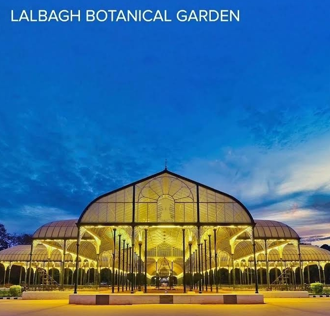
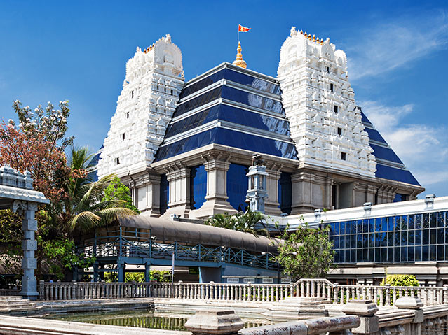
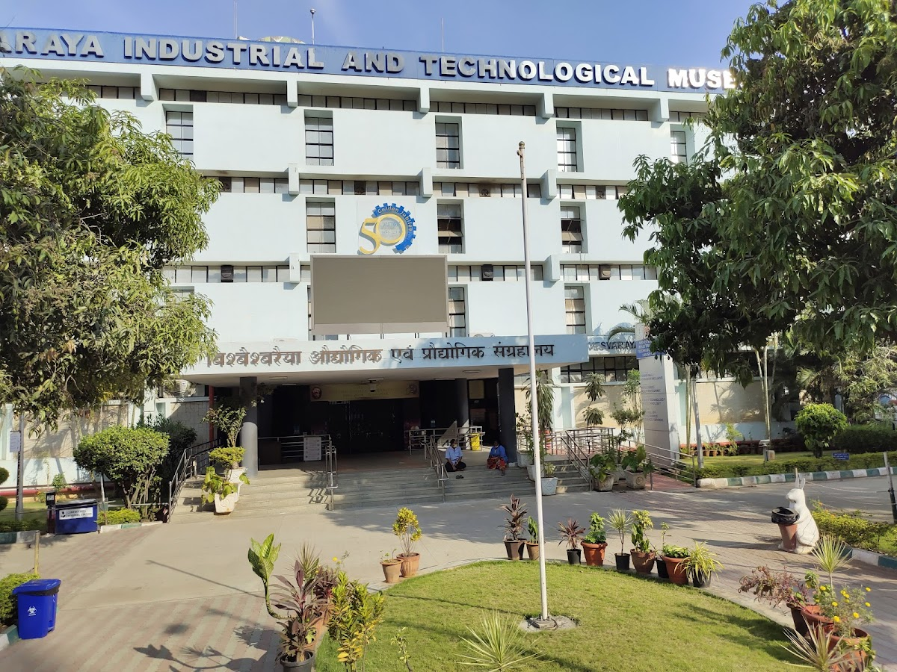

1
Gardens, heritage and central Bengaluru
Day 1 · 3 stops
Easy start
Botanical GardenLalbagh Botanical Garden
Botanical garden with an aquarium & glasshouse designed to mimic London's former Crystal Palace.

Hindu TempleISKCON Bangalore
Expansive, modern Hare Krishna temple campus, including shrines, food stalls & souvenir shops.

Tourist AttractionVisvesvaraya Industrial & Technological Museum
Family-friendly technology & science museum with exhibits on engines, space, biotechnology & more.
Food idea: Dinner near Church Street or MG Road after Cubbon Park.